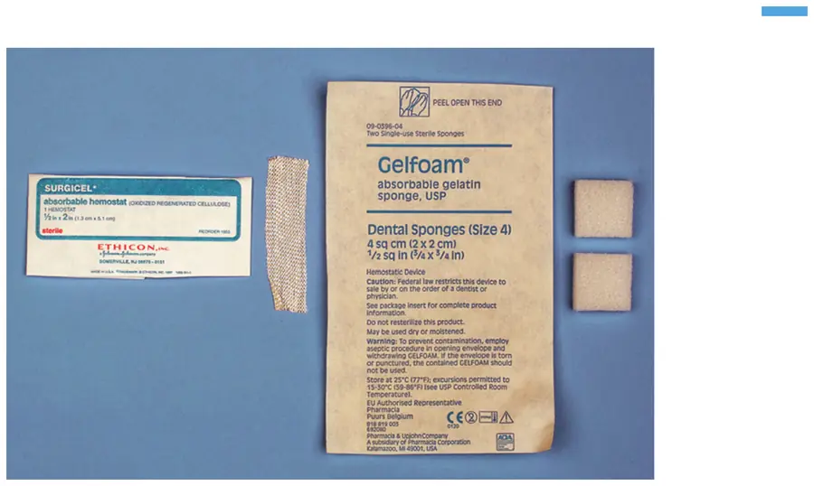
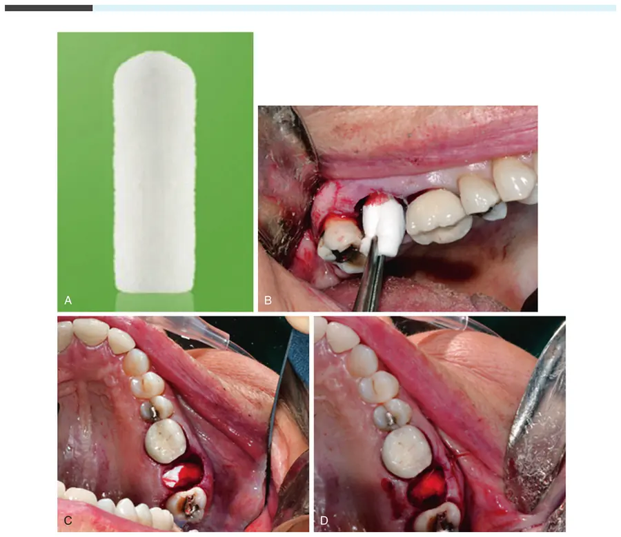

نسخه استخراجشده؛ ترجمه یا تأیید علمی انجام نشده است. وضعیت: captured
اگر خونریزی ادامه یابد، مادهای میتواند در ساکت گذاشته شود تا به بهدست آوردن هموستاز کمک کند. چهار ماده برای این کار وجود دارد.

۱) اسفنج ژلاتین قابل جذب (مثل Gelfoam) — پرکاربردترین و ارزانترین.
۲) سلولز اکسیدشدهی بازساخته (مثل Surgicel).
پس یک بدهبستان روشن: ژلاتین ملایمتر ولی ضعیفتر؛ سلولز قویتر ولی به قیمت التیام کندتر.
۳) ترومبین موضعی. اگر جراح نگرانی ویژهای دربارهی قابلیت انعقاد خون بیمار داشته باشد، یک فرآوردهی مایع ترومبین موضعی (تهیهشده از ترومبین نوترکیب انسانی) میتواند روی یک اسفنج ژلاتین اشباع و در ساکت دندان وارد شود.

و سازوکارش ظریف است: ترومبین گامهایی از آبشار انعقاد را دور میزند و کمک میکند فیبرینوژن بهصورت آنزیمی به فیبرین تبدیل شود، که یک لخته میسازد. — یعنی حتی اگر بخشهای بالادستی آبشار مختل باشند، این ماده از پاییندست کار را پیش میبرد.
و همان روال آشنا: اسفنج همراه ترومبین موضعی با یک بخیهی هشتی در جای خود ایمن میشود، و یک پک گاز به روش معمول روی محل کشیدن گذاشته میشود.
۴) کلاژن. کلاژن تجمع پلاکتی را ترویج میکند و بنابراین به تسریع انعقاد خون کمک میکند. کلاژن اکنون در چند شکل مختلف موجود است:
پس چهار ماده و چهار سازوکار متفاوت: ژلاتین داربست میسازد، سلولز زیر فشار پک میشود، ترومبین آبشار را دور میزند، کلاژن پلاکتها را جمع میکند.
حتی پس از بهدست آمدن هموستاز اولیه، گاهی بیماران با خونریزی از محل کشیدن تماس میگیرند — که به آن خونریزی ثانویه گفته میشود.
دستور خانگی، سهمرحلهای:
و روال مطب — جراح باید یک رژیم منظم و برنامهریزیشده برای کنترل خونریزی ثانویه داشته باشد:
و علت واقعی خونریزی ثانویه، اغلب رفتار خود بیمار است: دلیل خونریزی معمولاً نوعی ترومای ثانویه است که وقتی بیمار به مکیدن ناحیه ادامه میدهد یا خون را تف میکند — بهجای اینکه با گاز فشار بیاورد — تقویت میشود.
و اگر ۵ دقیقه فشار جواب نداد: جراح باید بیحسی موضعی بدهد تا ساکت تهاجمیتر درمان شود. و اینجا یک انتخاب فنی مهم است:
پس از بهدست آمدن بیحسی ناحیهای: جراح باید ساکت را بهآرامی کورتاژ کند و همهی نواحی لختهی قدیمی را ساکشن کند. ناحیهی مشخص خونریزی باید تا حد ممکن روشن شناسایی شود: مثل خونریزی اولیه، بافت نرم باید برای ترشح منتشر در برابر خونریزی شریانی مشخص بررسی شود، و بافت استخوانی برای خونریزی شریان نوترینت کوچک یا ترشح عمومی.
و استاندارد کنترل موضعی خونریزی ثانویه: استفاده از اسفنج ژلاتین قابل جذب همراه ترومبین موضعی، نگهداشتهشده با یک بخیهی هشتی و تقویتشده با فشار محکم یک پک گاز مرطوب کوچک. این تکنیک تقریباً در هر ساکت خونریزیدهندهای خوب کار میکند — هرچند در بسیاری از موقعیتها، اسفنج ژلاتین و فشار گاز کافیاند.
و پیش از مرخص کردن بیمار با خونریزی ثانویه: به بیمار باید دستورهای مشخصی دربارهی نحوهی گذاشتن پک گاز مستقیماً روی محل خونریزی داده شود، اگر خونریزی بیشتری رخ داد. و جراح باید بیمار را دستکم ۳۰ دقیقه پایش کند تا مطمئن شود هموستاز کافی به دست آمده است.
و اگر هیچیک از تدابیر موضعی جواب نداد: جراح باید انجام آزمایشهای غربالگری آزمایشگاهی بیشتر را در نظر بگیرد تا مشخص شود بیمار نقص هموستاتیک عمیقی دارد یا نه. در چنین موردی، جراح معمولاً از یک هماتولوژیست مشاوره میخواهد.